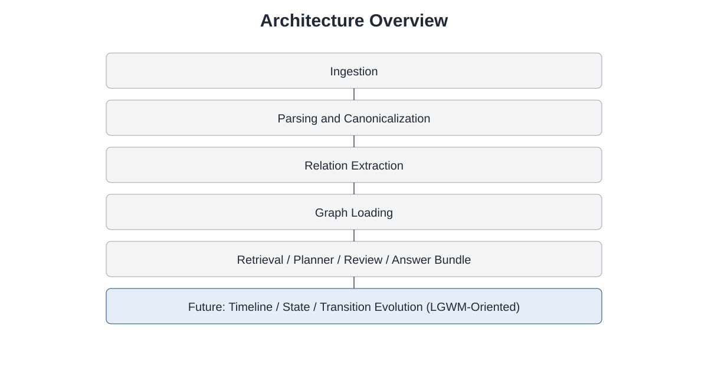

Public Documentation Repository
Graph-Based Legal IR for Environmental Law
Evidence-first legal information retrieval and legal graph modeling for Chilean environmental law.
This repository documents an explainable legal retrieval project based on an explicit legal graph, exact textual evidence, and human review of ambiguous relations.
Architecture Overview
The public architecture includes ingestion, parsing/canonicalization, relation extraction, graph loading, retrieval/planner, review, and controlled answer bundles. A future transition toward timeline/state/transition logic is being explored as a later evolution.

Current Status
The core development repository remains private while MVP architecture, evaluation pipelines, and review workflows are being consolidated. This repository is public-facing documentation.
Roadmap Snapshot
- MVP hardening
- Review and goldset consolidation
- Public demo
- Timeline / point-in-time state
- Legal transition primitives
- LGWM-oriented expansion
Public demo: coming later.